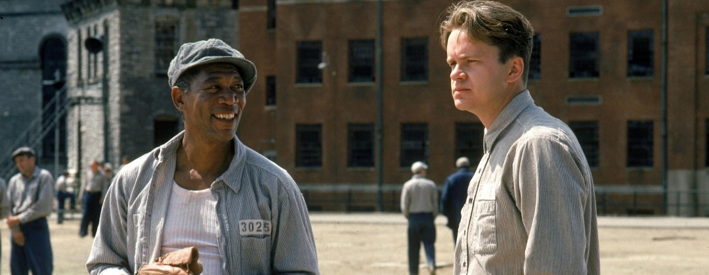
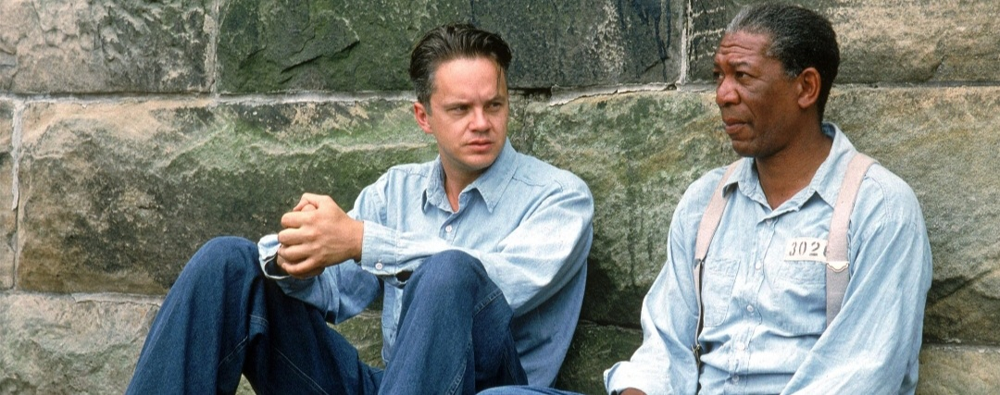
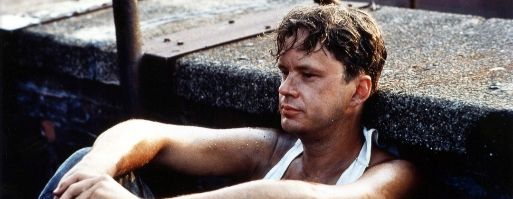
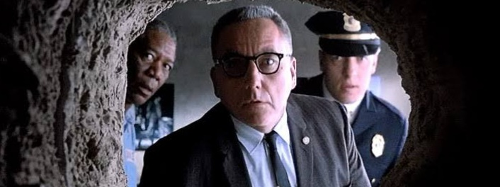

Shawshank Redemption : Why You Should be Watching this Movie With the Highest IMDB Rating
With a good plot, briliant characters, and have good morals, Shawshank Redemption makes the audience amazed and gaping with a good story.

Format : Movie
Released : 1994
Written and Directed By : Frank Darabont
Run Time : 138 Minutes
Characters : Andy Dufresne, Ellis 'Red' Boyd Redding, Byron Hadley, Samuel Norton
There have been many good films released, especially in 1994, which are films and some of them even won the highest positions on certain sites, but do you have watched Shawshank Redemption? The film topped the IMDB website with a rating of 9.3 labeled as one of the best films of all time. If you have never watched this film, we recommend that you watch it at least once in a lifetime, because there are so many interesting things about this film.
Shawshank Redemption itself is based on the novel by Stephen King, with the title "Rita Hayworth and Shawshak Redemption". The film itself is one of the films directed by Frank Darabont as the director, starring Tim Robbins as Andy Dufresne and Morgan Freeman as Ellis 'Red' Boyd Redding.
This film tells the life of Andy Dufresne who is a banker, spending nearly twenty years at Shawshank State Prison. This was due to his case for the murder of his wife and having an affair, even though he insisted on not admitting it.
Shawshank Redemption has earned as many as seven nominations at the 1995 Oscars. However, they did not get an Oscar. Even though this film has moved 29 years since its release on September 22, 1994, there are many unique facts in the film The Shawshank Redemption. Here, iKNOWLEDGE will share some interesting facts about the Shawshank Redemption film, so you don't miss this legendary film.
Interesting Facts About The Shawshank Redemption
If you have never seen or are not even interested in watching the Shawshank Redemption movie, iKNOWLEDGE will share several reasons why you should watch the film with the highest rating on this IMDb site.
1. Highest Rated Movies On IMDb
The Shawshank Redemption is ranked first with a rating of 9.3 from the ratings given by 2.5 million users on the IMDb site. IMDb is the largest film database site in the world. On this site, there is a rating feature that users can use to rate a film.
This film was followed by The Godfather with a rating of 9.2 from 1.7 million users on the IMDb site. From the data obtained from the site, The Shawshank Redemption has been in position for quite a long time.
2. A Film With A Prison Setting, But Rich In Morals And Inspiration
Even though most of the setting in this film is a prison, this film actually succeeds in giving the audience many moral and inspiring stories, which we would not even expect. For example, in the middle of the film, Red says that hope
is a dangerous thing in prison, but Andy manages to prove that hope is not something wrong, it is actually something good
from the human being himself and will never die. Hope is a good thing, maybe the best of things, and no good thing ever dies
.
This film also gives us a little insight, that people who are in prison are not necessarily better than others outside prison, in this case such as Officer Byron Hadley and Prison Head Samuel Norton, who apparently have committed massive money laundering.
3. Adaptation Of A novel, And Has A Different Title From The Novel
This film is an adaptation of Stephen King's novel Rita Hayworth and Shawshank Redemption. His story is contained in a collection of novels with the title Different Seasons. King sold the copyright for the novel at a very low price to Frank Darabont, who was his best friend.
Frank Darabont wrote the script for this film in approximately eight weeks. Before taking the script to Castle Rock Entertainment, he decided to remove Rita Hayworth from the title.
This is reasonable so that the public is not mistaken that this film is the story of a woman named Rita Hayworth.
4. A Film With A Plot Twist That Makes The Audience Gape
Since the beginning of this film, we will be taken to a situation where Andy Dufresne, who is a banker, is accused of having killed his wife and her lover. We are also confused whether it is true that Andy had committed the murder or not.
After Andy was taken to Shawshank prison which is one of the strictest prisons, Andy was forced to serve his life sentence there. Andy, who is an introvert, makes it difficult for him to socialize with people in prison, until a month later Andy begins his conversation with Ellis 'Red' Boyd Redding
The film runs with Andy and Red who live their daily lives in prison, until at the end of the film, there is a plot twist that even I would not have thought would happen like this (no spoiler).
5. Released Under Different Titles In Several Countries
The Shawshank Redemption film has been released in various countries, and has many different titles in each country. This makes many people think that this is an action film.
In Denmark it has the title "En Verden Udenfor" which means "A World Outside", then in Israel it is called "Homot Shel Tivka", meaning "Walls of Hope", and in Mexico it is called "Sueños de Fuga" which means "Dreams of escape".
Then in Hungary this film also has the title "A Remény Rabjai" which means "The Prisoners of Hope" and in Norway it is titled "Frihetens Regn" which means "The Rain of Freedom". As for the Asian continent, such as in Taiwan, this film is titled "1995: Fantastic".